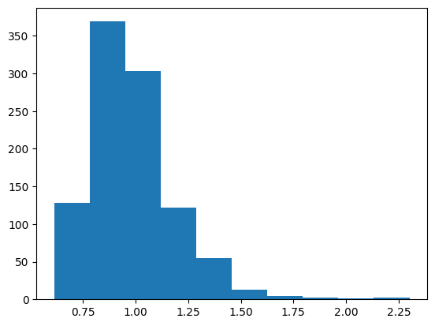
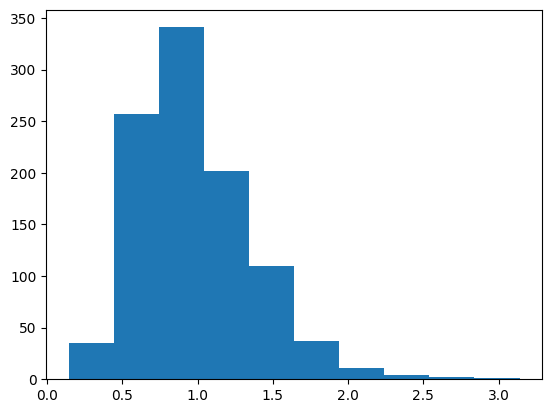

Code Calibration#
Using examples from Sorensen, J.D. (2004), Notes in Structural Reliability Theory And Risk Analysis.
[1]:
import pystra as pr
import numpy as np
from scipy.optimize import fsolve, minimize
from matplotlib import pyplot as plt
import pandas as pd
from scipy.stats import gumbel_r
[2]:
def calibration(reliability_func,Xk,beta_t,output=False,xtol=1e-4,**kwargs):
"""
Generic reliability calibration function.
Inputs:
- reliability_func: callable accepting nominal values Xk and returning a Form object
- Xk: initial values of the nominal variables
- beta_t: the target reliability index
- output: diagnostic output
- kwargs: additional args to be passed to reliability_func
Return:
- X_opt: the values of the nominal variables at beta_t
- form: the form object at the target reliability index
"""
def obj_func(Xk,beta_t):
form = reliability_func(Xk,**kwargs)
if output:
print(f"{Xk=} | β = {form.getBeta()} | α = {form.getAlpha()} | x* = {form.getDesignPoint(False)}")
return beta_t - form.beta
Xk_opt = fsolve(obj_func,x0=Xk,args=(beta_t),xtol=xtol)
form = reliability_func(Xk_opt,**kwargs)
return Xk_opt,form
[3]:
def print_form_results(form):
print(f"β = {form.getBeta()} | α = {form.getAlpha()} | x* = {form.getDesignPoint(False)}")
[4]:
def sample_maxima(dist,n,n_sample=1000):
"""
Sample the distribution of the maximum of n samples from a pystra `dist` object.
Inputs:
dist: the pystra distribution object from which samples of maxima are sought
n: the block size from which to take the maximum
n_samples: the number of samples to produce
"""
x = dist.sample(n*n_sample).reshape(n,n_sample)
x_max = np.max(x,axis=0)
return x_max
[5]:
def sample_minima(dist,n,n_sample=1000):
"""
Sample the distribution of the minimum of n samples from a pystra `dist` object.
Inputs:
dist: the pystra distribution object from which samples of minima are sought
n: the block size from which to take the minimum
n_samples: the number of samples to produce
"""
x = dist.sample(n*n_sample).reshape(n,n_sample)
x_min = np.min(x,axis=0)
return x_min
Partial Factors#
Example 1#
Taken from Sorensen (2004), Example 1, pp.141-2
[6]:
def lsf(z,R,G,Q):
return z*R - (G + Q)
[7]:
def reliability(z=10.0,V=0.2):
ls = pr.LimitState(lsf)
sm = pr.StochasticModel()
sm.addVariable(pr.Constant("z", z))
sm.addVariable(pr.Lognormal("R", 1.0,0.15))
sm.addVariable(pr.Normal("G", *2*np.array([1, 0.1])))
sm.addVariable(pr.Gumbel("Q",*3*np.array([1,V])))
form = pr.Form(sm,ls)
form.run()
return form
[8]:
df = pd.DataFrame(columns=['β_T', 'V', 'z', 'λ_q', 'r*','g*','q*','γR','γG','γQ'])
for V in [0.2,0.3,0.4]:
for beta_t in [3.8,4.3,4.8]:
z, form = calibration(reliability,Xk=15.0,beta_t=beta_t,V=V)
R,G,Q = form.model.getMarginalDistributions()
Rk = R.ppf(0.05)
Gk = G.ppf(0.5)
Qk = Q.ppf(0.98)
Xk = np.array([Rk,Gk,Qk])
Xstar = form.getDesignPoint(False)
γ = Xstar/Xk
df.loc[len(df.index)] = [beta_t, V, z[0], Qk/Q.mean,*Xstar,1/γ[0],*γ[1:]]
df.style.format('{:.3f}')
[8]:
| β_T | V | z | λ_q | r* | g* | q* | γR | γG | γQ | |
|---|---|---|---|---|---|---|---|---|---|---|
| 0 | 3.800 | 0.200 | 11.256 | 1.518 | 0.702 | 2.078 | 5.820 | 1.103 | 1.039 | 1.278 |
| 1 | 4.300 | 0.200 | 12.747 | 1.518 | 0.675 | 2.080 | 6.531 | 1.145 | 1.040 | 1.434 |
| 2 | 4.800 | 0.200 | 14.462 | 1.518 | 0.649 | 2.081 | 7.306 | 1.192 | 1.040 | 1.604 |
| 3 | 3.800 | 0.300 | 13.367 | 1.778 | 0.740 | 2.053 | 7.840 | 1.046 | 1.026 | 1.470 |
| 4 | 4.300 | 0.300 | 15.468 | 1.778 | 0.712 | 2.054 | 8.966 | 1.086 | 1.027 | 1.681 |
| 5 | 4.800 | 0.300 | 17.890 | 1.778 | 0.684 | 2.054 | 10.187 | 1.131 | 1.027 | 1.910 |
| 6 | 3.800 | 0.400 | 15.581 | 2.037 | 0.761 | 2.040 | 9.820 | 1.017 | 1.020 | 1.607 |
| 7 | 4.300 | 0.400 | 18.295 | 2.037 | 0.733 | 2.040 | 11.362 | 1.056 | 1.020 | 1.859 |
| 8 | 4.800 | 0.400 | 21.428 | 2.037 | 0.703 | 2.041 | 13.028 | 1.100 | 1.020 | 2.132 |
Load Combinations#
Example 2#
Taken from Sorensen (2004), Example 4, pp.190-1. Notes:
The loads described as \(Q_1\) and \(Q_2\), are not the point-in-time loads, but the annual maxima distributions, from which the point-in-time loads are to be inferred.
There is an error in the textbook, and the wind load \(Q_2\) is not taken as occurring \(r_2 = 360\) times per year as stated, but instead \(r_2=2\) per year.
Only with these adaptations, do the results match.
[9]:
def lsf(z,R,G,Q1,Q2):
return z*R - (0.4*G + 0.6*Q1 + 0.3*Q2)
[10]:
# Point-in-time & annual max distributions
Q1max = pr.Gumbel("Q1",1,0.2)
Q2max = pr.Gumbel("Q2",1,0.4)
# Parameters of inferred parents
Q1pit = pr.Gumbel("Q1",0.89, 0.2)
Q2pit = pr.Gumbel("Q2",0.77, 0.4)
# Using new Parent distribution from pystra (not yet merged)
#Q1pit = pr.Parent("Q1",Q1max,2)
#Q2pit = pr.Parent("Q2",Q2max,2)
[11]:
def reliability(z=1.0,lc=1):
ls = pr.LimitState(lsf)
sm = pr.StochasticModel()
sm.addVariable(pr.Constant("z", z))
sm.addVariable(pr.Lognormal("R", 1.0,0.15))
sm.addVariable(pr.Normal("G", 1, 0.1))
# Choose distribution depending on load case
if lc == 2:
sm.addVariable(Q1pit)
sm.addVariable(Q2max)
else:
sm.addVariable(Q1max)
sm.addVariable(Q2pit)
form = pr.Form(sm,ls)
form.run()
return form
[12]:
lc = 1
Rk_1, form_1 = calibration(reliability,Xk=3.0,beta_t=4.3,lc=lc)
print_form_results(form_1)
β = 4.2999999997675875 | α = [-0.64155965 0.08627279 0.53896114 0.53896114] | x* = [0.65528626 1.03713177 1.62355976 2.01711952]
[13]:
lc = 2
Rk_2, form_2 = calibration(reliability,Xk=3.0,beta_t=4.3,lc=lc)
print_form_results(form_2)
β = 4.299999999615988 | α = [-0.64216869 0.08625869 0.53859949 0.53859949] | x* = [0.65502999 1.0371257 1.51291126 2.24582252]
[14]:
Qk = np.array([Q1max.ppf(0.98),Q2max.ppf(0.98)])
Qk
[14]:
array([1.51845518, 2.03691035])
[15]:
Q_star = np.array([ form_1.getDesignPoint(False)[-2:], form_2.getDesignPoint(False)[-2:] ]).T
Q_star
[15]:
array([[1.62355976, 1.51291126],
[2.01711952, 2.24582252]])
[16]:
γ = Q_star/Qk[:,None]
γ
[16]:
array([[1.0692181 , 0.99634898],
[0.9902839 , 1.10256326]])
[17]:
ψ = γ/np.diag(γ)
ψ
[17]:
array([[1. , 0.90366604],
[0.92617577, 1. ]])
Tuning of Sorensen’s parameters#
Because of the error in the textbook, quite a bit of exploratory work was needed to find the cause.
[18]:
def reliability2(z,x):
ls = pr.LimitState(lsf)
sm = pr.StochasticModel()
sm.addVariable(pr.Constant("z", z))
sm.addVariable(pr.Lognormal("R", 1.0,0.15))
sm.addVariable(pr.Normal("G", 1, 0.1))
# To find Sorensen's parameters
Q1max = pr.Gumbel("Q1",1,0.2)
Q2max = pr.Gumbel("Q2",1,0.4)
# Opt = 0.57917817, 0.42796312
# 0.89089033, 0.19967346
#Q1pit = pr.Gumbel("Q1",x[0],x[1])
#sm.addVariable(Q1pit)
#sm.addVariable(Q2max)
# Opt = 0.77089986, 0.40104018
# 0.57917817, 0.42796312
Q2pit = pr.Gumbel("Q2",x[0],x[1])
sm.addVariable(Q1max)
sm.addVariable(Q2pit)
form = pr.Form(sm,ls)
form.run()
return form
[19]:
def obj_func(x):
z, form = calibration(reliability2,Xk=3.0,beta_t=4.3,output=False,x=x)
x_star = form.getDesignPoint(False)
diff = x_star[2:] - np.array([1.62, 2.03]) # np.array([1.51, 2.25])
print(f"{x=} | {x_star=} | {diff=}")
return np.linalg.norm(diff)
x_opt = minimize(obj_func,x0=[0.5,0.4],method='Nelder-Mead',bounds=[(0.1,1.2),(0.1,0.6)])
x_opt
x=array([0.5, 0.4]) | x_star=array([0.66232795, 1.03729168, 1.64100382, 1.78200764]) | diff=array([ 0.02100382, -0.24799236])
x=array([0.525, 0.4 ]) | x_star=array([0.66166597, 1.03727721, 1.63939433, 1.80378866]) | diff=array([ 0.01939433, -0.22621134])
x=array([0.5 , 0.42]) | x_star=array([0.66544148, 1.03626096, 1.54713615, 2.07118623]) | diff=array([-0.07286385, 0.04118623])
x=array([0.525, 0.42 ]) | x_star=array([0.66478769, 1.0362482 , 1.54608407, 2.0918623 ]) | diff=array([-0.07391593, 0.0618623 ])
x=array([0.5 , 0.44]) | x_star=array([0.66930354, 1.03509884, 1.46600765, 2.35300155]) | diff=array([-0.15399235, 0.32300155])
x=array([0.51875, 0.41 ]) | x_star=array([0.66327997, 1.03677549, 1.59243344, 1.94129855]) | diff=array([-0.02756656, -0.08870145])
x=array([0.49375, 0.41 ]) | x_star=array([0.66393778, 1.03678912, 1.5937528 , 1.92008426]) | diff=array([-0.0262472 , -0.10991574])
x=array([0.5171875, 0.4175 ]) | x_star=array([0.66455493, 1.03638747, 1.55744632, 2.04957956]) | diff=array([-0.06255368, 0.01957956])
x=array([0.4984375, 0.4275 ]) | x_star=array([0.66686613, 1.03583925, 1.51473512, 2.17784369]) | diff=array([-0.10526488, 0.14784369])
x=array([0.51367188, 0.414375 ]) | x_star=array([0.66411715, 1.03655487, 1.57199515, 2.00107693]) | diff=array([-0.04800485, -0.02892307])
x=array([0.53085937, 0.411875 ]) | x_star=array([0.66325726, 1.03667474, 1.58309353, 1.97855706]) | diff=array([-0.03690647, -0.05144294])
x=array([0.52734375, 0.40875 ]) | x_star=array([0.66286125, 1.03683271, 1.59810869, 1.93003499]) | diff=array([-0.02189131, -0.09996501])
x=array([0.51972656, 0.4153125 ]) | x_star=array([0.66411481, 1.03650258, 1.56740929, 2.01973005]) | diff=array([-0.05259071, -0.01026995])
x=array([0.50253906, 0.4178125 ]) | x_star=array([0.66499265, 1.03637827, 1.55668493, 2.04192436]) | diff=array([-0.06331507, 0.01192436])
x=array([0.5237793 , 0.41335938]) | x_star=array([0.66368437, 1.03660228, 1.57629251, 1.9946361 ]) | diff=array([-0.04370749, -0.0353639 ])
x=array([0.50961914, 0.41632813]) | x_star=array([0.66455012, 1.03645446, 1.56339191, 2.02569273]) | diff=array([-0.05660809, -0.00430727])
x=array([0.52023926, 0.41410156]) | x_star=array([0.66389974, 1.03656561, 1.57293849, 2.00262416]) | diff=array([-0.04706151, -0.02737584])
x=array([0.52629395, 0.41503906]) | x_star=array([0.66389701, 1.03651345, 1.56835008, 2.02126908]) | diff=array([-0.05164992, -0.00873092])
x=array([0.53260498, 0.41537109]) | x_star=array([0.66378758, 1.03649268, 1.56653866, 2.03135067]) | diff=array([-0.05346134, 0.00135067])
x=array([0.52578125, 0.41625 ]) | x_star=array([0.66411362, 1.03645011, 1.56300421, 2.03805401]) | diff=array([-0.05699579, 0.00805401])
x=array([0.52162476, 0.41463867]) | x_star=array([0.66395247, 1.03653689, 1.57040439, 2.01156379]) | diff=array([-0.04959561, -0.01843621])
x=array([0.52819214, 0.41436523]) | x_star=array([0.66373505, 1.03654765, 1.57134511, 2.01311218]) | diff=array([-0.04865489, -0.01688782])
x=array([0.53242493, 0.4138916 ]) | x_star=array([0.66354525, 1.03657014, 1.57342261, 2.00959382]) | diff=array([-0.04657739, -0.02040618])
x=array([0.53709412, 0.41429199]) | x_star=array([0.66348997, 1.03654671, 1.57125405, 2.01951915]) | diff=array([-0.04874595, -0.01048085])
x=array([0.5448288 , 0.41411865]) | x_star=array([0.66325712, 1.03655199, 1.57197036, 2.02289562]) | diff=array([-0.04802964, -0.00710438])
x=array([0.55095978, 0.41297119]) | x_star=array([0.6629098 , 1.0366076 , 1.57674026, 2.0118993 ]) | diff=array([-0.04325974, -0.0181007 ])
x=array([0.56329269, 0.41193726]) | x_star=array([0.66241895, 1.03665393, 1.5811594 , 2.0068347 ]) | diff=array([-0.0388406, -0.0231653])
x=array([0.57569656, 0.41216431]) | x_star=array([0.66213188, 1.03663565, 1.57949208, 2.02055396]) | diff=array([-0.04050792, -0.00944604])
x=array([0.59733238, 0.41130066]) | x_star=array([0.66143039, 1.03666731, 1.5823268 , 2.02649632]) | diff=array([-0.0376732 , -0.00350368])
x=array([0.61579628, 0.40911926]) | x_star=array([0.66060744, 1.03676537, 1.59160755, 2.01056159]) | diff=array([-0.02839245, -0.01943841])
x=array([0.65128002, 0.40661957]) | x_star=array([0.65930885, 1.03686564, 1.60128464, 2.00516695]) | diff=array([-0.01871536, -0.02483305])
x=array([0.68531971, 0.40598297]) | x_star=array([0.65833535, 1.03687592, 1.602188 , 2.02551776]) | diff=array([-0.017812 , -0.00448224])
x=array([0.74633322, 0.40300583]) | x_star=array([0.65633869, 1.03697676, 1.61246693, 2.0360136 ]) | diff=array([-0.00753307, 0.0060136 ])
x=array([0.80028086, 0.39832474]) | x_star=array([0.65433102, 1.03714747, 1.62826409, 2.02308261]) | diff=array([ 0.00826409, -0.00691739])
x=array([0.89533405, 0.394711 ]) | x_star=array([0.65146795, 1.03723526, 1.63794491, 2.05846968]) | diff=array([0.01794491, 0.02846968])
x=array([0.71229353, 0.40364243]) | x_star=array([0.65730277, 1.03696822, 1.61151538, 2.01567265]) | diff=array([-0.00848462, -0.01432735])
x=array([0.83432055, 0.39768814]) | x_star=array([0.65338224, 1.03715298, 1.62883254, 2.04435203]) | diff=array([0.00883254, 0.01435203])
x=array([0.74280028, 0.40215385]) | x_star=array([0.6563113 , 1.03701692, 1.61655139, 2.02125901]) | diff=array([-0.00344861, -0.00874099])
x=array([0.68885264, 0.40683495]) | x_star=array([0.6583702 , 1.03683377, 1.59817282, 2.04031302]) | diff=array([-0.02182718, 0.01031302])
x=array([0.7724238 , 0.40045229]) | x_star=array([0.6552842 , 1.03711075, 1.62200565, 2.02407119]) | diff=array([ 0.00200565, -0.00592881])
x=array([0.76889087, 0.39960032]) | x_star=array([0.65526189, 1.03714967, 1.6248676 , 2.01187934]) | diff=array([ 0.0048676 , -0.01812066])
x=array([0.75197263, 0.40215445]) | x_star=array([0.65607612, 1.03701139, 1.61597496, 2.02921361]) | diff=array([-0.00402504, -0.00078639])
x=array([0.78159615, 0.40045289]) | x_star=array([0.65504934, 1.03710516, 1.62141196, 2.0320543 ]) | diff=array([0.00141196, 0.0020543 ])
x=array([0.80099408, 0.3996024 ]) | x_star=array([0.65444028, 1.03713003, 1.62276948, 2.0398582 ]) | diff=array([0.00276948, 0.0098582 ])
x=array([0.76114498, 0.40215505]) | x_star=array([0.65584122, 1.03700584, 1.6153984 , 2.03716795]) | diff=array([-0.0046016 , 0.00716795])
x=array([0.7696041 , 0.40087798]) | x_star=array([0.65544701, 1.03705954, 1.62064839, 2.02702115]) | diff=array([ 0.00064839, -0.00297885])
x=array([0.79922762, 0.39917641]) | x_star=array([0.65446417, 1.03711484, 1.62459217, 2.03339245]) | diff=array([0.00459217, 0.00339245])
x=array([0.76378638, 0.40140994]) | x_star=array([0.6556713 , 1.03703742, 1.61880204, 2.02887621]) | diff=array([-0.00119796, -0.00112379])
x=array([0.77577843, 0.40098485]) | x_star=array([0.65530334, 1.03705116, 1.61988431, 2.03361186]) | diff=array([-0.00011569, 0.00361186])
x=array([0.77114768, 0.4009047 ]) | x_star=array([0.65541108, 1.03705745, 1.62045728, 2.02866899]) | diff=array([ 0.00045728, -0.00133101])
x=array([0.75333791, 0.40186175]) | x_star=array([0.65600083, 1.03702358, 1.6173862 , 2.02604753]) | diff=array([-0.0026138 , -0.00395247])
x=array([0.77453159, 0.4008051 ]) | x_star=array([0.65531115, 1.03705973, 1.62058429, 2.03046873]) | diff=array([0.00058429, 0.00046873])
x=array([0.78189289, 0.40029986]) | x_star=array([0.65502136, 1.0371116 , 1.62186435, 2.03067528]) | diff=array([0.00186435, 0.00067528])
x=array([0.76831301, 0.40113242]) | x_star=array([0.65551801, 1.03704681, 1.61954979, 2.02946495]) | diff=array([-0.00045021, -0.00053505])
x=array([0.77169692, 0.40103283]) | x_star=array([0.6554142 , 1.03705154, 1.61997973, 2.03061551]) | diff=array([-2.02694742e-05, 6.15506548e-04])
x=array([0.77197153, 0.40109689]) | x_star=array([0.6554196 , 1.03704614, 1.61944901, 2.0322154 ]) | diff=array([-0.00055099, 0.0022154 ])
x=array([0.76547833, 0.40136014]) | x_star=array([0.65562126, 1.03703858, 1.61888046, 2.02974507]) | diff=array([-0.00111954, -0.00025493])
x=array([0.77226828, 0.40094386]) | x_star=array([0.65538764, 1.03705507, 1.62025032, 2.03009186]) | diff=array([2.50317983e-04, 9.18620127e-05])
x=array([0.77565218, 0.40084427]) | x_star=array([0.65528773, 1.03705735, 1.62037733, 2.0318914 ]) | diff=array([0.00037733, 0.0018914 ])
x=array([0.7701478 , 0.40106038]) | x_star=array([0.65545754, 1.03705128, 1.61998358, 2.02958565]) | diff=array([-1.64184776e-05, -4.14346763e-04])
x=array([0.77071916, 0.40097142]) | x_star=array([0.65543098, 1.0370548 , 1.62025429, 2.02906167]) | diff=array([ 0.00025429, -0.00093833])
x=array([0.77145248, 0.40101747]) | x_star=array([0.65541839, 1.03705236, 1.62004836, 2.03022705]) | diff=array([4.83594299e-05, 2.27052709e-04])
x=array([0.77357295, 0.40090095]) | x_star=array([0.65534851, 1.03705614, 1.62031491, 2.03073383]) | diff=array([0.00031491, 0.00073383])
x=array([0.77100409, 0.40102053]) | x_star=array([0.65543028, 1.03705249, 1.62006649, 2.02987245]) | diff=array([ 6.64906822e-05, -1.27553176e-04])
x=array([0.77018829, 0.40109414]) | x_star=array([0.65546486, 1.03704734, 1.61957301, 2.03063329]) | diff=array([-0.00042699, 0.00063329])
x=array([0.77174828, 0.40098143]) | x_star=array([0.65540599, 1.03705375, 1.62015389, 2.03007075]) | diff=array([1.53885408e-04, 7.07478285e-05])
x=array([0.77129989, 0.40098448]) | x_star=array([0.65541787, 1.03705388, 1.62017203, 2.02971611]) | diff=array([ 0.00017203, -0.00028389])
x=array([0.77141433, 0.40100923]) | x_star=array([0.65541826, 1.03705274, 1.62007928, 2.03009931]) | diff=array([7.92760611e-05, 9.93148581e-05])
x=array([0.77067014, 0.40104832]) | x_star=array([0.65544255, 1.03705149, 1.61999186, 2.02990111]) | diff=array([-8.14279086e-06, -9.88914979e-05])
x=array([0.77013107, 0.40108177]) | x_star=array([0.65546466, 1.03704792, 1.6196228 , 2.03043478]) | diff=array([-0.0003772 , 0.00043478])
x=array([0.77108038, 0.40103702]) | x_star=array([0.65543054, 1.03705173, 1.62000465, 2.03012794]) | diff=array([4.65400976e-06, 1.27940794e-04])
x=array([0.77106131, 0.4010329 ]) | x_star=array([0.65543047, 1.03705192, 1.62002011, 2.03006407]) | diff=array([2.01129125e-05, 6.40666884e-05])
x=array([0.77031712, 0.40107199]) | x_star=array([0.65545859, 1.03704823, 1.61964738, 2.03047885]) | diff=array([-0.00035262, 0.00047885])
x=array([0.77114003, 0.40102492]) | x_star=array([0.65542739, 1.03705222, 1.62004263, 2.03004094]) | diff=array([4.26342683e-05, 4.09380292e-05])
x=array([0.7715312 , 0.40100949]) | x_star=array([0.65541531, 1.03705266, 1.62007088, 2.03020394]) | diff=array([7.08776371e-05, 2.03935577e-04])
x=array([0.7708854 , 0.40103861]) | x_star=array([0.65543574, 1.03705178, 1.62001162, 2.0299768 ]) | diff=array([ 1.16170167e-05, -2.31999004e-05])
x=array([0.77096412, 0.40103063]) | x_star=array([0.65543265, 1.03705208, 1.62003414, 2.02995367]) | diff=array([ 3.41397438e-05, -4.63332143e-05])
x=array([0.7707095 , 0.40104433]) | x_star=array([0.65544101, 1.03705164, 1.62000312, 2.02988954]) | diff=array([ 3.11956131e-06, -1.10462137e-04])
x=array([0.7710324 , 0.40102977]) | x_star=array([0.65543079, 1.03705207, 1.62003276, 2.03000308]) | diff=array([3.27567670e-05, 3.08419557e-06])
x=array([0.77095368, 0.40103775]) | x_star=array([0.65543388, 1.03705178, 1.62001023, 2.03002622]) | diff=array([1.02345193e-05, 2.62162917e-05])
x=array([0.77080669, 0.40104659]) | x_star=array([0.65543883, 1.03705148, 1.61998909, 2.02999994]) | diff=array([-1.09065291e-05, -6.21627114e-08])
x=array([0.77069383, 0.40105501]) | x_star=array([0.65544284, 1.03705118, 1.61996726, 2.02999837]) | diff=array([-3.27401646e-05, -1.62679345e-06])
x=array([0.77073841, 0.40104746]) | x_star=array([0.65544069, 1.03705148, 1.61999048, 2.02995052]) | diff=array([-9.52460827e-06, -4.94769340e-05])
x=array([0.77089986, 0.40104018]) | x_star=array([0.65543558, 1.0370517 , 1.6200053 , 2.03000729]) | diff=array([5.29503172e-06, 7.29203283e-06])
[19]:
final_simplex: (array([[0.77089986, 0.40104018],
[0.77080669, 0.40104659],
[0.7708854 , 0.40103861]]), array([9.01172036e-06, 1.09067063e-05, 2.59459141e-05]))
fun: 9.011720358810416e-06
message: 'Optimization terminated successfully.'
nfev: 84
nit: 44
status: 0
success: True
x: array([0.77089986, 0.40104018])
[20]:
d = pr.Gumbel("Q1",0.89, 0.2)
x_max = sample_maxima(d,2)
l,s = gumbel_r.fit(x_max)
μ,σ2 = gumbel_r.stats(loc=l,scale=s)
print(f"μ = {μ}, σ = {np.sqrt(σ2)}")
plt.hist(x_max);
μ = 0.9818462589784923, σ = 0.19450298564871332

[21]:
d = pr.Gumbel("Q2",0.77, 0.40)
x_max = sample_maxima(d,2)
l,s = gumbel_r.fit(x_max)
μ,σ2 = gumbel_r.stats(loc=l,scale=s)
print(f"μ = {μ}, σ = {np.sqrt(σ2)}")
plt.hist(x_max);
μ = 0.9841971900069314, σ = 0.3936093842398042

[ ]: